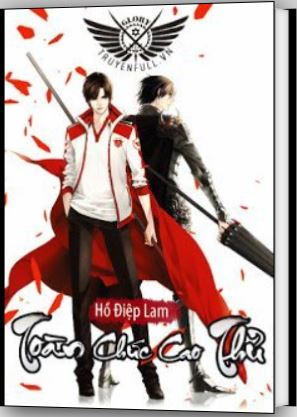

Hú Truyện Full

Tác giả: Hồ Điệp Lam
Thể loại: Võng Du, Hài Hước
Nguồn: alldiepall.wordpress.com, thiencobatgiai.wordpress.com, toanchuccaothu.com
Trạng thái: Full
TOÀN CHỨC CAO THỦ
Thể loại: Về game thủ chuyên nghiệp, shounen (không có ai), hài hước
Độ dài: 1728 chương + Phiên ngoại
Editor: Team Liều Mạng SLL, Lá Mùa Thu
Diệp Tu – cao thủ đứng đầu được vinh danh là bách khoa toàn thư của game Vinh Quang, vì đủ loại nguyên nhân mà bị câu lạc bộ đuổi đi. Sau khi bị trục xuất, rời khỏi nghề, hắn trở thành nhân viên quản lý trong một tiệm net nho nhỏ. Thế nhưng, với kinh nghiệm về game trong 10 năm, mang theo những hồi ức năm nào, cùng món vũ khí tự chế vẫn chưa hoàn thành, hắn lại bắt đầu quay về con đường đỉnh cao ấy…
Chương 1: Cao thủ bị trục xuất
Chương 2: Khu C số 47
Chương 3: Ca đêm
Chương 4: Cao thủ thần bí
Chương 5: Kĩ năng phối hợp
Chương 6: Ô Thiên Cơ
Chương 7: Ám Dạ Miêu Yêu
Chương 8: Cá chết lưới rách
Chương 9: Đôi tay của Diệp Tu
Chương 10: Tên vô sỉ
* Thuật ngữ trong game:
Game thủ: đam mê và đầu tư nhiều cho game cũng có thể từ game mà bán trang bị, cày thuê… để kiếm thêm tiền thiệt ngoài đời
Tuyển thủ chuyên nghiệp: game thủ tham gia vào các giải đấu, xem đây là nghề nghiệp của mình luôn.
Kĩ năng hỗ trợ/buff: các kĩ năng giúp tăng hiệu ứng khiến bạn mạnh hơn như thêm máu, tăng sát thương, tăng tốc độ… Những nghề chuyên về mảng này thì gọi là nghề trị liệu
Kỹ năng xấu/debuff: các kĩ năng gây bất lợi đến bạn hoặc quái.
Máu (Health Point): thanh sinh mệnh, thanh máu.
Mana (Magic Point): pháp lực để xài kỹ năng. Thanh này thường màu xanh dương nên người ta gọi là Lam mà thôi trans theo thế giới là mana luôn.
Thù hận: bạn đến gõ quái hoặc bước vào tầm nhìn thì quái sẽ ghi hận bạn, dựa vào điểm công kích, tổng điểm sát thương của bạn cao nhất thì quái sẽ mãi mãi một lòng vì bạn. Cũng có những kỹ năng riêng và trang bị để tăng thù hận.
T (Tanker): dành cho những nghề máu trâu phòng thủ cao, T sẽ lên cướp thù hận của BOSS để BOSS chỉ đánh mình thằng này, tóm lại là hy sinh thân mình để anh em an tâm đánh mà ko bị BOSS chú ý.
OT: Các bạn cứ hiểu là khi tổng điểm sát thương của T không bằng thằng khác thì boss sẽ thay lòng đổi dạ, yêu đứa mạnh hơn. Healer cũng có thể đoạt được thù hận từ tay T khi mà số lượng buff vượt quá mức so với tổng điểm sát thương của T, kiểu này thì rất dễ OT.
Nghề chuyên công kích, DPS ( Dealing Damage Per Second): những nghề có sát thương cao, gây damage tranh thủ từng giây,. Khi đi phó bản rất cần những nghề chuyên công kích, có thể DPS cao nhưng máu mỏng, ví dụ như pháp sư…
Thời gian đóng băng (thời gian cool down viết tắt là thời gian CD): kỹ năng ko thể dùng liên tục phải có thời gian tạm dừng chờ phục hồi lại mới có thể dùng tiếp được, đấy là thời gian đóng băng.
PK: hiểu theo nghĩa trần trụi là đánh đấm giết chóc nhau, theo nghĩa hoa mỹ là chiến đấu với nhau.
Phó bản: Một bản đồ cách biệt khác, giống phá đảo trong Mario, gồm nhiều quái và 1 boss ở mỗi tầng, đánh hết quái và Boss trong này là phá xong phó bản, tùy phó bản mà có giới hạn số lần được vào trong ngày hoặc thất bại sẽ có thời gian cấm vào liền phải chờ hồi phục. Thời gian phá phó bản càng ngắn sẽ đc xếp hạng trong bảng thành tích.
Đổ xí ngầu: Sau khi đánh BOSS ở phó bản sẽ rơi ra đồ hiếm, để tránh giành giật thì hệ thống sẽ tự động đổ xí ngầu (từ 1 -100 điểm), người chơi có quyền đổ hoặc bỏ quyền, ai được điểm cao nhất thì giành được món đồ. Đội trưởng của tổ đội cũng có thể chỉnh đặc điểm nhóm là “phân phối cho đội trưởng”, tức là bỏ vụ đổ xí ngầu và tất cả đồ đều thuộc nhóm trưởng sau đó phân chia sau.
************************
“Cạch cạch cạch, tạch tạch…”
Đôi tay linh hoạt bay lượn thao túng chuột và bàn phím, âm thanh gõ phím đầy nhịp điệu tựa như một bản nhạc nhẹ nhàng. Trong màn hình ánh sáng chói rực, đối thủ bị đánh bay, máu bắn tung tóe mà ngã xuống.
“Ha ha.” Diệp Thu cười cười, tay lấy điều thuốc từ khóe miệng xuống. Tro thuốc trắng xám đã kết thành một chuỗi dài, nhưng trong quá trình Diệp Thu khua chuột gõ phím thực hiện thao tác lại không hề rơi vãi chút nào. Nhanh chóng lấy điếu thuốc rồi dụi tắt trên chiếc gạt tàn có hình dạng kỳ lạ, tay Diệp Thu nhanh nhẹn bay về lại bàn phím, đang chuẩn bị nói gì đó với đối thủ, cửa phòng chợt “cạch” một tiếng rồi bị người đẩy ra.
Diệp Thu không quay đầu lại, như đã sớm chờ đợi giây phút này, chỉ hỏi một câu: “Tới rồi?”
“Tới rồi.” Tô Mộc Tranh cũng trả lời đơn giản như thế.
“Vậy thì đi thôi!” Diệp Thu từ chối lời mời tái chiến của đối thủ, nhẹ nhàng rút xuống một tấm thẻ từ chiếc máy chuyên dùng chơi game Vinh Quang, khi đứng dậy đi đến cửa, thuận tay lấy chiếc áo khoác vắt trên giá áo xuống.
Đêm đã khuya, câu lạc bộ Gia Thế vẫn sáng đèn. Diệp Thu và Tô Mộc Tranh rời khỏi phòng, đi thẳng đến cuối hành lang. Nơi này là một phòng họp rất rộng, mới vào cửa đã có thể nhìn thấy ngay một tấm bảng điện tử chiếm trọn vách tường, mặt trên hiển thị bảng xếp hạng chiến tích của “Liên minh chuyên nghiệp Vinh Quang” và một ít số liệu thống kê.
Bảng xếp hạng chiến tích: chiến đội Gia Thế xếp thứ 19, đứng thứ hai từ dưới đếm lên.
Đối với một chiến đội át chủ bài từng xưng bá ba mùa giải liên tiếp, thành tích này hết sức gai mắt, mà lúc này lại được treo sáng ngời trên tường như đang vô tình cười nhạo mọi người.
Nhưng không khí trong phòng không chút nặng nề, ngược lại có chút sôi nổi. Lúc này các đội viên Gia Thế đang xum xoe vây quanh một người, Diệp Thu bước vào phòng họp bọn họ cũng làm như không thấy, những người có thể liếc mắt qua, trong ánh mắt đều là lạnh lùng và chế giễu.
“Diệp Thu, câu lạc bộ đã quyết định, chức vụ đội trưởng của cậu sẽ do người mới chuyển tới đội là Tôn Tường tiếp nhận, sau này Nhất Diệp Chi Thu cũng sẽ do Tôn Tường điều khiển.” Quản lý câu lạc bộ nhìn thấy Diệp Thu bước vào, lập tức xoay đầu nói. Không có mở đầu, không có uyển chuyển biểu đạt, người vừa bước vào đã lạnh lùng thông báo như thế, vô tình như vứt bỏ một miếng giấy vệ sinh đã qua sử dụng.
Tô Mộc Tranh há miệng muốn nói, lại bị Diệp Thu nhè nhẹ kéo về, khẽ cười rồi lắc đầu với cô, thể hiện bản thân cũng không để ý.
“Anh Diệp, ngại quá đi, vừa đến đã chiếm vị trí của anh rồi.” Chỗ ngồi đầu tiên bên tay trái bàn họp —— là chỗ ngồi chuyên dùng cho đội trưởng chiến đội Gia Thế, nơi vốn thuộc về Diệp Thu. Tôn Tường đĩnh đạc ngồi lên rồi nói một câu như vậy, tròng mắt lại không thèm liếc Diệp Thu một cái, đây đã không phải là phớt lờ nữa, mà chính là coi khinh. Ánh mắt của cậu ta, ngược lại phần lớn dành cho người vào cửa cùng lúc với Diệp Thu – Tô Mộc Tranh.
Nói đúng ra, Tô Mộc Tranh quả thực nhìn hút mắt hơn Diệp Thu, cô nàng chính là người đẹp nổi tiếng hàng đầu trong liên minh chuyên nghiệp Vinh Quang. Cho dù rời khỏi cái phạm vi nho nhỏ này, ném vào giới giải trí mỹ nữ như mây, cô nàng vẫn là một mỹ nữ hiếm có.
Ngay cả những đồng đội Gia Thế đã nhìn thấy Tô Mộc Tranh mỗi ngày, lúc này nhìn Tô Mộc Tranh bước vào cũng không khỏi ngây người. Nhưng bọn họ rất nhanh đã hoàn hồn, bởi vì có nhân vật càng khiến họ cảm thấy quan trọng, đáng để họ chú ý đến hơn.
“Ha ha, lời này của anh Tường, vị trí này anh ngồi hợp lắm.” Mọi người lấy lại tinh thần vội vàng tranh nhau cướp lời kịch.
“Không sai, người nào đó đã già rồi, hết thời rồi!”
Game thủ: đam mê và đầu tư nhiều cho game cũng có thể từ game mà bán trang bị, cày thuê… để kiếm thêm tiền thiệt ngoài đời
Tuyển thủ chuyên nghiệp: game thủ tham gia vào các giải đấu, xem đây là nghề nghiệp của mình luôn.
Kĩ năng hỗ trợ/buff: các kĩ năng giúp tăng hiệu ứng khiến bạn mạnh hơn như thêm máu, tăng sát thương, tăng tốc độ… Những nghề chuyên về mảng này thì gọi là nghề trị liệu
Kỹ năng xấu/debuff: các kĩ năng gây bất lợi đến bạn hoặc quái.
Máu (Health Point): thanh sinh mệnh, thanh máu.
Mana (Magic Point): pháp lực để xài kỹ năng. Thanh này thường màu xanh dương nên người ta gọi là Lam mà thôi trans theo thế giới là mana luôn.
Thù hận: bạn đến gõ quái hoặc bước vào tầm nhìn thì quái sẽ ghi hận bạn, dựa vào điểm công kích, tổng điểm sát thương của bạn cao nhất thì quái sẽ mãi mãi một lòng vì bạn. Cũng có những kỹ năng riêng và trang bị để tăng thù hận.
T (Tanker): dành cho những nghề máu trâu phòng thủ cao, T sẽ lên cướp thù hận của BOSS để BOSS chỉ đánh mình thằng này, tóm lại là hy sinh thân mình để anh em an tâm đánh mà ko bị BOSS chú ý.
OT: Các bạn cứ hiểu là khi tổng điểm sát thương của T không bằng thằng khác thì boss sẽ thay lòng đổi dạ, yêu đứa mạnh hơn. Healer cũng có thể đoạt được thù hận từ tay T khi mà số lượng buff vượt quá mức so với tổng điểm sát thương của T, kiểu này thì rất dễ OT.
Nghề chuyên công kích, DPS ( Dealing Damage Per Second): những nghề có sát thương cao, gây damage tranh thủ từng giây,. Khi đi phó bản rất cần những nghề chuyên công kích, có thể DPS cao nhưng máu mỏng, ví dụ như pháp sư…
Thời gian đóng băng (thời gian cool down viết tắt là thời gian CD): kỹ năng ko thể dùng liên tục phải có thời gian tạm dừng chờ phục hồi lại mới có thể dùng tiếp được, đấy là thời gian đóng băng.
PK: hiểu theo nghĩa trần trụi là đánh đấm giết chóc nhau, theo nghĩa hoa mỹ là chiến đấu với nhau.
Phó bản: Một bản đồ cách biệt khác, giống phá đảo trong Mario, gồm nhiều quái và 1 boss ở mỗi tầng, đánh hết quái và Boss trong này là phá xong phó bản, tùy phó bản mà có giới hạn số lần được vào trong ngày hoặc thất bại sẽ có thời gian cấm vào liền phải chờ hồi phục. Thời gian phá phó bản càng ngắn sẽ đc xếp hạng trong bảng thành tích.
Đổ xí ngầu: Sau khi đánh BOSS ở phó bản sẽ rơi ra đồ hiếm, để tránh giành giật thì hệ thống sẽ tự động đổ xí ngầu (từ 1 -100 điểm), người chơi có quyền đổ hoặc bỏ quyền, ai được điểm cao nhất thì giành được món đồ. Đội trưởng của tổ đội cũng có thể chỉnh đặc điểm nhóm là “phân phối cho đội trưởng”, tức là bỏ vụ đổ xí ngầu và tất cả đồ đều thuộc nhóm trưởng sau đó phân chia sau.
************************
“Cạch cạch cạch, tạch tạch…”
Đôi tay linh hoạt bay lượn thao túng chuột và bàn phím, âm thanh gõ phím đầy nhịp điệu tựa như một bản nhạc nhẹ nhàng. Trong màn hình ánh sáng chói rực, đối thủ bị đánh bay, máu bắn tung tóe mà ngã xuống.
“Ha ha.” Diệp Thu cười cười, tay lấy điều thuốc từ khóe miệng xuống. Tro thuốc trắng xám đã kết thành một chuỗi dài, nhưng trong quá trình Diệp Thu khua chuột gõ phím thực hiện thao tác lại không hề rơi vãi chút nào. Nhanh chóng lấy điếu thuốc rồi dụi tắt trên chiếc gạt tàn có hình dạng kỳ lạ, tay Diệp Thu nhanh nhẹn bay về lại bàn phím, đang chuẩn bị nói gì đó với đối thủ, cửa phòng chợt “cạch” một tiếng rồi bị người đẩy ra.
Diệp Thu không quay đầu lại, như đã sớm chờ đợi giây phút này, chỉ hỏi một câu: “Tới rồi?”
“Tới rồi.” Tô Mộc Tranh cũng trả lời đơn giản như thế.
“Vậy thì đi thôi!” Diệp Thu từ chối lời mời tái chiến của đối thủ, nhẹ nhàng rút xuống một tấm thẻ từ chiếc máy chuyên dùng chơi game Vinh Quang, khi đứng dậy đi đến cửa, thuận tay lấy chiếc áo khoác vắt trên giá áo xuống.
Đêm đã khuya, câu lạc bộ Gia Thế vẫn sáng đèn. Diệp Thu và Tô Mộc Tranh rời khỏi phòng, đi thẳng đến cuối hành lang. Nơi này là một phòng họp rất rộng, mới vào cửa đã có thể nhìn thấy ngay một tấm bảng điện tử chiếm trọn vách tường, mặt trên hiển thị bảng xếp hạng chiến tích của “Liên minh chuyên nghiệp Vinh Quang” và một ít số liệu thống kê.
Bảng xếp hạng chiến tích: chiến đội Gia Thế xếp thứ 19, đứng thứ hai từ dưới đếm lên.
Đối với một chiến đội át chủ bài từng xưng bá ba mùa giải liên tiếp, thành tích này hết sức gai mắt, mà lúc này lại được treo sáng ngời trên tường như đang vô tình cười nhạo mọi người.
Nhưng không khí trong phòng không chút nặng nề, ngược lại có chút sôi nổi. Lúc này các đội viên Gia Thế đang xum xoe vây quanh một người, Diệp Thu bước vào phòng họp bọn họ cũng làm như không thấy, những người có thể liếc mắt qua, trong ánh mắt đều là lạnh lùng và chế giễu.
“Diệp Thu, câu lạc bộ đã quyết định, chức vụ đội trưởng của cậu sẽ do người mới chuyển tới đội là Tôn Tường tiếp nhận, sau này Nhất Diệp Chi Thu cũng sẽ do Tôn Tường điều khiển.” Quản lý câu lạc bộ nhìn thấy Diệp Thu bước vào, lập tức xoay đầu nói. Không có mở đầu, không có uyển chuyển biểu đạt, người vừa bước vào đã lạnh lùng thông báo như thế, vô tình như vứt bỏ một miếng giấy vệ sinh đã qua sử dụng.
Tô Mộc Tranh há miệng muốn nói, lại bị Diệp Thu nhè nhẹ kéo về, khẽ cười rồi lắc đầu với cô, thể hiện bản thân cũng không để ý.
“Anh Diệp, ngại quá đi, vừa đến đã chiếm vị trí của anh rồi.” Chỗ ngồi đầu tiên bên tay trái bàn họp —— là chỗ ngồi chuyên dùng cho đội trưởng chiến đội Gia Thế, nơi vốn thuộc về Diệp Thu. Tôn Tường đĩnh đạc ngồi lên rồi nói một câu như vậy, tròng mắt lại không thèm liếc Diệp Thu một cái, đây đã không phải là phớt lờ nữa, mà chính là coi khinh. Ánh mắt của cậu ta, ngược lại phần lớn dành cho người vào cửa cùng lúc với Diệp Thu – Tô Mộc Tranh.
Nói đúng ra, Tô Mộc Tranh quả thực nhìn hút mắt hơn Diệp Thu, cô nàng chính là người đẹp nổi tiếng hàng đầu trong liên minh chuyên nghiệp Vinh Quang. Cho dù rời khỏi cái phạm vi nho nhỏ này, ném vào giới giải trí mỹ nữ như mây, cô nàng vẫn là một mỹ nữ hiếm có.
Ngay cả những đồng đội Gia Thế đã nhìn thấy Tô Mộc Tranh mỗi ngày, lúc này nhìn Tô Mộc Tranh bước vào cũng không khỏi ngây người. Nhưng bọn họ rất nhanh đã hoàn hồn, bởi vì có nhân vật càng khiến họ cảm thấy quan trọng, đáng để họ chú ý đến hơn.
“Ha ha, lời này của anh Tường, vị trí này anh ngồi hợp lắm.” Mọi người lấy lại tinh thần vội vàng tranh nhau cướp lời kịch.
“Không sai, người nào đó đã già rồi, hết thời rồi!”
“Hừ, làm giá khỉ gì!”
“Để hắn giải nghệ cũng vì tốt cho hắn, hắn còn có thể làm gì nữa chứ?”
“Phải đấy phải đấy, xem ra hắn cũng biết điều, không dựa vào câu lạc bộ dưỡng lão.”
Diệp Thu và Tô Mộc Tranh vừa rời khỏi, đám người ở lại phòng họp chợt như phục hồi tinh thần, lại bắt đầu bàn tán thảo luận. Vẻ mặt của Tôn Tường vẫn không ổn, cậu không tham dự, chỉ lại gần quản lý: “Tôi không hiểu, vì sao anh ta lại chịu chấp nhận điều kiện như thế?”
“Cậu ta không thể không chấp nhận.” Quản lý nói.
“Vì sao?”
“Bởi vì cậu ta không trả nổi tiền bồi thường hợp đồng.” Quản lý đáp.
“Không… Không thể nào?” Tôn Tường kinh ngạc, Diệp Thu này chính là một tuyển thủ chuyên nghiệp đã dốc sức bảy năm ở liên minh đấy, đẳng cấp còn là hàng đầu, dù hắn có từ chối tất cả các hoạt động thương mại, chỉ bằng tiền lương cũng không thể đến mức trả không nỗi tiền bồi thường.
“Cậu không chơi từ thuở đầu, cậu không hiểu được. Liên minh thời kỳ đầu, tuyển thủ chuyên nghiệp cũng không nở mày nở mặt như hiện tại, mọi người đều sống tạm bợ, đa số đều phải làm thêm. Hồi đó, những người bị loại bỏ đều rất thảm, phần lớn thanh xuân đều dành cho trò chơi, không có nghề thành thạo nên cuộc sống về sau đa phần rất túng quẫn. Diệp Thu là thiên tài thời ấy, dựa vào trình độ đi thẳng đến hôm nay, thế nhưng, cậu ta có rất nhiều bạn bè như thế kia.”
“Ý của ông là, tiền bạc của anh ta đều trợ giúp cho bạn bè?” Tôn Tường trừng lớn mắt.
“Đúng vậy.”
“Nếu anh ta rất cần tiền, sao lại không chịu nhận những hoạt động thương mại?” Tôn Tường hỏi.
“Tên này có nguyên nhân mà không cho người khác biết.” Quản lý nói.
“Ông có bao giờ đoán thử chưa?” Tôn Tường hỏi.
“Có lẽ liên quan đến người nhà cậu ta.” Quản lý đáp.
“Hử?”
“Từ trước đến giờ chưa ai biết chuyện về người nhà cậu ta, cậu ta cũng không hề nhắc đến, chuyện này rất kỳ quái, thế nên tôi nghi ngờ điểm này.” Quản lý nói.
“Cái người này… thật có nhiều bí ẩn a!” Trong tay Tôn Tường cầm chiếc thẻ tài khoản Nhất Diệp Chi Thu mà Diệp Thu đưa cho, cậu biết, Nhất Diệp Chi Thu được tạo trước cả khi Liên minh chuyên nghiệp được hình thành, tài khoản trò chơi của Diệp Thu được sử dụng suốt đến giờ, là một trong những tài khoản cổ nhất ở Vinh Quang.
“Được rồi, không nhắc đến cậu ta nữa, hôm nay ông chủ bận nên không đến được, nhưng đặc biệt đưa tôi chai rượu mình cất kỹ nhiều năm, dành riêng để chào mừng cậu.” Quản lý nói.
“Ha ha, thế thì cảm ơn! Gia Thế có tôi, nên trở mình rồi.” Diệp Thu rời đi.
Tô Mộc Tranh đứng ở cửa lớn câu lạc bộ, cô vẫn nhìn Diệp Thu suốt quãng đường cả khi bóng lưng hắn biến mất. Hắn không ngừng quay người vẫy tay với cô, nước mắt Tô Mộc Tranh sớm rơi đầy mặt.
Không nhiều lời từ biệt, Diệp Thu tổng cộng chỉ nói tám chữ: “Nghỉ ngơi một năm, sau đó trở về.”
Tô Mộc Tranh không nói chữ nào, chỉ nặng nề gật đầu. Cô đã không còn là một thiếu nữ ngây thơ chưa hiểu sự đời từ lâu rồi, cô đã có can đảm để tự mình đối mặt rất nhiều chuyện.
Bông tuyết bay đầy trời, mùa đông năm nay, thật lạnh buốt.
Tuyết rơi?
Khi Diệp Thu rời khỏi câu lạc bộ, trong lòng vẫn chưa nghĩ đến bước tiếp theo. Sống ổn định nhiều năm, bất chợt phải thay đổi, hắn vẫn chưa kịp thích ứng, hắn chỉ nghĩ thôi cứ đi như thế này trước đã, cứ thế mà đi, đi đến khi bản thân nghĩ rõ ràng mới thôi.
Ai biết trời lại không cho hắn cơ hội này, cứ phải để tuyết rơi xuống lúc này, đã thế càng lúc càng lớn. Bông tuyết nhanh chóng ướt đẫm vai hắn, đầu tóc cũng kết băng, không tránh là không được.
Diệp Thu xem trái xem phải, ven đường có một tiệm net, ánh đèn vẫn rực rỡ trong đêm, hắn vội vàng mà chạy đến.
Trong tiệm net rất ấm, Diệp Thu bước vào phủi xuống tuyết đọng trên người, ở trước quầy mướn một máy.
“Máy số 47 khu C.” Cô gái ở quầy thông báo vị trí máy, tiếp đấy trả lại chứng minh cho người chơi máy, kết quả ngẩng đầu lên đã không có ai. Cô gái cũng không quá kinh ngạc, hiển nhiên với chuyện này đã gặp qua nhiều lần. Lặng lẽ cất kỹ chứng minh, người nào phát hiện không thấy sẽ tự động tìm đến.
Máy số 47 khu C, Diệp Thu men theo biển số tìm kiếm. Quy mô tiệm net này không nhỏ, máy khá nhiều, có tới hai tầng. Khu C… Diệp Thu nhìn thấy tấm biển treo trên trần nhà, hắn không cần phải lên lầu 2.
Khi đếm tới số 47, Diệp Thu hơi ngớ người, vị trí này rõ ràng đã có một cô gái ngồi, hơn nữa còn chơi Vinh Quang, đang solo với người ta trên đấu trường, thao tác kịch liệt khiến chiếc đuôi gà cao cao sau đầu hơi đung đưa.
Nhìn sườn mặt cô gái nọ, nhìn nhân vật bậc thầy pháo súng của cô trên màn hình, Diệp Thu hơi hoảng hốt, hắn thiếu chút cho rằng người ngồi ở đấy là Tô Mộc Tranh.
Nhưng hắn rất nhanh chóng nhận ra không phải, Tô Mộc Tranh luôn dịu dàng bình tĩnh, dù đang PK kịch liệt, vẫn có thể giữ nguyên nụ cười. Lại nói, Diệp Thu đôi khi nhìn Tô Mộc Tranh khẽ cười vươn súng khiến người khác nổ thành bã, sau đấy lại lễ phép xin lỗi, không hiểu sao chợt cảm thấy ớn lạnh.
Còn cô gái trước mặt này, dáng vẻ cũng xinh đẹp, trong sáng, dịu dàng, nhưng hành động nghiến răng nghiến lợi chà đạp bàn phím và chuột đầy hung ác và mạnh mẽ của cô nàng chỉ khiến người ta cảm thấy con nhỏ này chắc chắn có âm mưu gì đây.
“Sát khí quá kinh người, nhưng thật đáng tiếc…” Diệp Thu nhìn rõ màn hình, hắn nhìn ra cô gái này nhanh chóng sẽ gay go. Không ngoài dự đoán, cô vừa lộ ra sơ hở đã bị đối thủ nắm bắt ngay, một bộ chiêu liên kích quăng đến, máu vẫn còn ít ỏi thoắt cái đã cạn sạch.
“Đệt!” Diệp Thu nghe thấy cô gầm lên một tiếng, vung tay đập bàn phím, tắt luôn trò chơi.
Diệp Thu do dự có nên ngồi vị trí này hay không, cô gái đã quay đầu, liếc mắt thì nhìn thấy Diệp Thu đang lưỡng lự, bực mình đứng dậy hỏi: “Chơi máy?”
Diệp Thu gật đầu.
“Ngồi đây đi!” Cô nói xong cũng đi mất.
Diệp Thu lắc đầu trước tố chất chiến đấu thiếu bình tĩnh của người chơi bình thường, song vẫn ngồi vào vị trí.
Trần Quả buồn bực, vô cùng buồn bực. Vừa mới solo với người ta trong đấu trường Vinh Quang, đánh 52 ván, kết quả chả thắng nổi ván nào, cô quả thực không thể tin đây là sự thật.
Tài khoản của cô cũng không kém, Trần Quả sờ “Trục Yên Hà” đang nằm trong túi mình, tài khoản này trong đám người chơi bình thường có thể nói là rất mạnh. Mà trình độ của Trần Quả cũng không tính là kém, cô chơi Vinh Quang cũng được 5 năm rồi. Đối thủ vừa rồi của cô, tài khoản không bằng cô, vậy mà đánh đến nỗi 52 ván cô không thắng nổi 1 ván.
“Là một đại cao thủ.” Trần Quả gật gật đầu kết luận.
“Chị chủ, chị chưa thoát game đúng không? Sao tên kia còn chơi tiếp.” Trần Quả vừa đi vừa nghĩ, đột nhiên bên cạnh truyền đến một câu. Trần Quả nghiêng đầu nhìn sang, trên máy tính bên cạnh là khách quen của tiệm, đang thò đầu dòm về phía máy mình vừa ngồi.
Tiêu! Trần Quả hoảng sợ vội vàng chạy về. Vinh Quang trở nên “hot”, khiến thiết bị đăng nhập tài khoản Vinh Quang trở thành phụ kiện thông thường gắn liền với máy tính, ở tiệm net thì càng không thể thiếu. Do chỉ cần đút thẻ vào khi đăng nhập, nên ở nơi công cộng như tiệm net, mọi người sau khi đăng nhập xong đều cất cẩn thận.
Một thẻ là một tài khoản, thẻ mất có thể báo mất giấy tờ, vì vậy kẻ trộm tài khoản đều tuyệt chủng. Nhưng ở nơi như tiệm net, thường có người sơ suất quên thoát game hoặc chưa thoát hoàn toàn, kết quả bị kẻ đến sau thừa gió bẻ măng, trộm tiền và trang bị. Trần Quả vừa mới thua suốt 52 trận nên khá nóng nảy, không chú ý, game chưa thoát mà chỉ quay về màn hình nền.
Trần Quả vội vã xông về phía trước, quả nhiên nhìn đến tên nọ đang điều khiển tài khoản của mình, nhưng dường như không phải là trộm trang bị, mà đang chiến đấu hăng say với người ta trong đấu trường. Trần Quả còn chưa kịp đến gào rú, đã thấy trên màn hình nhảy ra hai chữ to: “Vinh Quang!”
“Để hắn giải nghệ cũng vì tốt cho hắn, hắn còn có thể làm gì nữa chứ?”
“Phải đấy phải đấy, xem ra hắn cũng biết điều, không dựa vào câu lạc bộ dưỡng lão.”
Diệp Thu và Tô Mộc Tranh vừa rời khỏi, đám người ở lại phòng họp chợt như phục hồi tinh thần, lại bắt đầu bàn tán thảo luận. Vẻ mặt của Tôn Tường vẫn không ổn, cậu không tham dự, chỉ lại gần quản lý: “Tôi không hiểu, vì sao anh ta lại chịu chấp nhận điều kiện như thế?”
“Cậu ta không thể không chấp nhận.” Quản lý nói.
“Vì sao?”
“Bởi vì cậu ta không trả nổi tiền bồi thường hợp đồng.” Quản lý đáp.
“Không… Không thể nào?” Tôn Tường kinh ngạc, Diệp Thu này chính là một tuyển thủ chuyên nghiệp đã dốc sức bảy năm ở liên minh đấy, đẳng cấp còn là hàng đầu, dù hắn có từ chối tất cả các hoạt động thương mại, chỉ bằng tiền lương cũng không thể đến mức trả không nỗi tiền bồi thường.
“Cậu không chơi từ thuở đầu, cậu không hiểu được. Liên minh thời kỳ đầu, tuyển thủ chuyên nghiệp cũng không nở mày nở mặt như hiện tại, mọi người đều sống tạm bợ, đa số đều phải làm thêm. Hồi đó, những người bị loại bỏ đều rất thảm, phần lớn thanh xuân đều dành cho trò chơi, không có nghề thành thạo nên cuộc sống về sau đa phần rất túng quẫn. Diệp Thu là thiên tài thời ấy, dựa vào trình độ đi thẳng đến hôm nay, thế nhưng, cậu ta có rất nhiều bạn bè như thế kia.”
“Ý của ông là, tiền bạc của anh ta đều trợ giúp cho bạn bè?” Tôn Tường trừng lớn mắt.
“Đúng vậy.”
“Nếu anh ta rất cần tiền, sao lại không chịu nhận những hoạt động thương mại?” Tôn Tường hỏi.
“Tên này có nguyên nhân mà không cho người khác biết.” Quản lý nói.
“Ông có bao giờ đoán thử chưa?” Tôn Tường hỏi.
“Có lẽ liên quan đến người nhà cậu ta.” Quản lý đáp.
“Hử?”
“Từ trước đến giờ chưa ai biết chuyện về người nhà cậu ta, cậu ta cũng không hề nhắc đến, chuyện này rất kỳ quái, thế nên tôi nghi ngờ điểm này.” Quản lý nói.
“Cái người này… thật có nhiều bí ẩn a!” Trong tay Tôn Tường cầm chiếc thẻ tài khoản Nhất Diệp Chi Thu mà Diệp Thu đưa cho, cậu biết, Nhất Diệp Chi Thu được tạo trước cả khi Liên minh chuyên nghiệp được hình thành, tài khoản trò chơi của Diệp Thu được sử dụng suốt đến giờ, là một trong những tài khoản cổ nhất ở Vinh Quang.
“Được rồi, không nhắc đến cậu ta nữa, hôm nay ông chủ bận nên không đến được, nhưng đặc biệt đưa tôi chai rượu mình cất kỹ nhiều năm, dành riêng để chào mừng cậu.” Quản lý nói.
“Ha ha, thế thì cảm ơn! Gia Thế có tôi, nên trở mình rồi.” Diệp Thu rời đi.
Tô Mộc Tranh đứng ở cửa lớn câu lạc bộ, cô vẫn nhìn Diệp Thu suốt quãng đường cả khi bóng lưng hắn biến mất. Hắn không ngừng quay người vẫy tay với cô, nước mắt Tô Mộc Tranh sớm rơi đầy mặt.
Không nhiều lời từ biệt, Diệp Thu tổng cộng chỉ nói tám chữ: “Nghỉ ngơi một năm, sau đó trở về.”
Tô Mộc Tranh không nói chữ nào, chỉ nặng nề gật đầu. Cô đã không còn là một thiếu nữ ngây thơ chưa hiểu sự đời từ lâu rồi, cô đã có can đảm để tự mình đối mặt rất nhiều chuyện.
Bông tuyết bay đầy trời, mùa đông năm nay, thật lạnh buốt.
Tuyết rơi?
Khi Diệp Thu rời khỏi câu lạc bộ, trong lòng vẫn chưa nghĩ đến bước tiếp theo. Sống ổn định nhiều năm, bất chợt phải thay đổi, hắn vẫn chưa kịp thích ứng, hắn chỉ nghĩ thôi cứ đi như thế này trước đã, cứ thế mà đi, đi đến khi bản thân nghĩ rõ ràng mới thôi.
Ai biết trời lại không cho hắn cơ hội này, cứ phải để tuyết rơi xuống lúc này, đã thế càng lúc càng lớn. Bông tuyết nhanh chóng ướt đẫm vai hắn, đầu tóc cũng kết băng, không tránh là không được.
Diệp Thu xem trái xem phải, ven đường có một tiệm net, ánh đèn vẫn rực rỡ trong đêm, hắn vội vàng mà chạy đến.
Trong tiệm net rất ấm, Diệp Thu bước vào phủi xuống tuyết đọng trên người, ở trước quầy mướn một máy.
“Máy số 47 khu C.” Cô gái ở quầy thông báo vị trí máy, tiếp đấy trả lại chứng minh cho người chơi máy, kết quả ngẩng đầu lên đã không có ai. Cô gái cũng không quá kinh ngạc, hiển nhiên với chuyện này đã gặp qua nhiều lần. Lặng lẽ cất kỹ chứng minh, người nào phát hiện không thấy sẽ tự động tìm đến.
Khi đếm tới số 47, Diệp Thu hơi ngớ người, vị trí này rõ ràng đã có một cô gái ngồi, hơn nữa còn chơi Vinh Quang, đang solo với người ta trên đấu trường, thao tác kịch liệt khiến chiếc đuôi gà cao cao sau đầu hơi đung đưa.
Nhìn sườn mặt cô gái nọ, nhìn nhân vật bậc thầy pháo súng của cô trên màn hình, Diệp Thu hơi hoảng hốt, hắn thiếu chút cho rằng người ngồi ở đấy là Tô Mộc Tranh.
Nhưng hắn rất nhanh chóng nhận ra không phải, Tô Mộc Tranh luôn dịu dàng bình tĩnh, dù đang PK kịch liệt, vẫn có thể giữ nguyên nụ cười. Lại nói, Diệp Thu đôi khi nhìn Tô Mộc Tranh khẽ cười vươn súng khiến người khác nổ thành bã, sau đấy lại lễ phép xin lỗi, không hiểu sao chợt cảm thấy ớn lạnh.
Còn cô gái trước mặt này, dáng vẻ cũng xinh đẹp, trong sáng, dịu dàng, nhưng hành động nghiến răng nghiến lợi chà đạp bàn phím và chuột đầy hung ác và mạnh mẽ của cô nàng chỉ khiến người ta cảm thấy con nhỏ này chắc chắn có âm mưu gì đây.
“Sát khí quá kinh người, nhưng thật đáng tiếc…” Diệp Thu nhìn rõ màn hình, hắn nhìn ra cô gái này nhanh chóng sẽ gay go. Không ngoài dự đoán, cô vừa lộ ra sơ hở đã bị đối thủ nắm bắt ngay, một bộ chiêu liên kích quăng đến, máu vẫn còn ít ỏi thoắt cái đã cạn sạch.
“Đệt!” Diệp Thu nghe thấy cô gầm lên một tiếng, vung tay đập bàn phím, tắt luôn trò chơi.
Diệp Thu do dự có nên ngồi vị trí này hay không, cô gái đã quay đầu, liếc mắt thì nhìn thấy Diệp Thu đang lưỡng lự, bực mình đứng dậy hỏi: “Chơi máy?”
Diệp Thu gật đầu.
“Ngồi đây đi!” Cô nói xong cũng đi mất.
Diệp Thu lắc đầu trước tố chất chiến đấu thiếu bình tĩnh của người chơi bình thường, song vẫn ngồi vào vị trí.
Trần Quả buồn bực, vô cùng buồn bực. Vừa mới solo với người ta trong đấu trường Vinh Quang, đánh 52 ván, kết quả chả thắng nổi ván nào, cô quả thực không thể tin đây là sự thật.
Tài khoản của cô cũng không kém, Trần Quả sờ “Trục Yên Hà” đang nằm trong túi mình, tài khoản này trong đám người chơi bình thường có thể nói là rất mạnh. Mà trình độ của Trần Quả cũng không tính là kém, cô chơi Vinh Quang cũng được 5 năm rồi. Đối thủ vừa rồi của cô, tài khoản không bằng cô, vậy mà đánh đến nỗi 52 ván cô không thắng nổi 1 ván.
“Là một đại cao thủ.” Trần Quả gật gật đầu kết luận.
“Chị chủ, chị chưa thoát game đúng không? Sao tên kia còn chơi tiếp.” Trần Quả vừa đi vừa nghĩ, đột nhiên bên cạnh truyền đến một câu. Trần Quả nghiêng đầu nhìn sang, trên máy tính bên cạnh là khách quen của tiệm, đang thò đầu dòm về phía máy mình vừa ngồi.
Tiêu! Trần Quả hoảng sợ vội vàng chạy về. Vinh Quang trở nên “hot”, khiến thiết bị đăng nhập tài khoản Vinh Quang trở thành phụ kiện thông thường gắn liền với máy tính, ở tiệm net thì càng không thể thiếu. Do chỉ cần đút thẻ vào khi đăng nhập, nên ở nơi công cộng như tiệm net, mọi người sau khi đăng nhập xong đều cất cẩn thận.
Một thẻ là một tài khoản, thẻ mất có thể báo mất giấy tờ, vì vậy kẻ trộm tài khoản đều tuyệt chủng. Nhưng ở nơi như tiệm net, thường có người sơ suất quên thoát game hoặc chưa thoát hoàn toàn, kết quả bị kẻ đến sau thừa gió bẻ măng, trộm tiền và trang bị. Trần Quả vừa mới thua suốt 52 trận nên khá nóng nảy, không chú ý, game chưa thoát mà chỉ quay về màn hình nền.
Trần Quả vội vã xông về phía trước, quả nhiên nhìn đến tên nọ đang điều khiển tài khoản của mình, nhưng dường như không phải là trộm trang bị, mà đang chiến đấu hăng say với người ta trong đấu trường. Trần Quả còn chưa kịp đến gào rú, đã thấy trên màn hình nhảy ra hai chữ to: “Vinh Quang!”